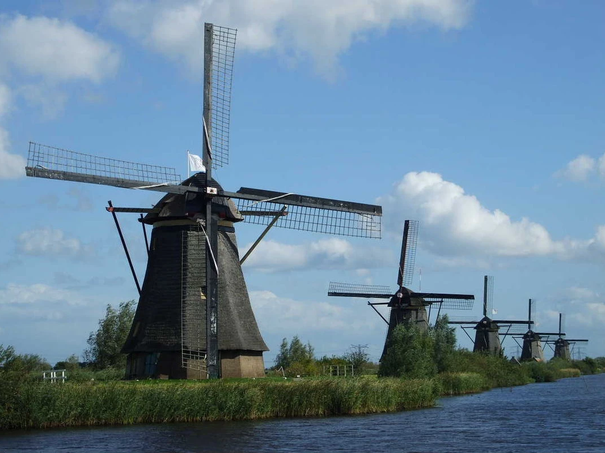
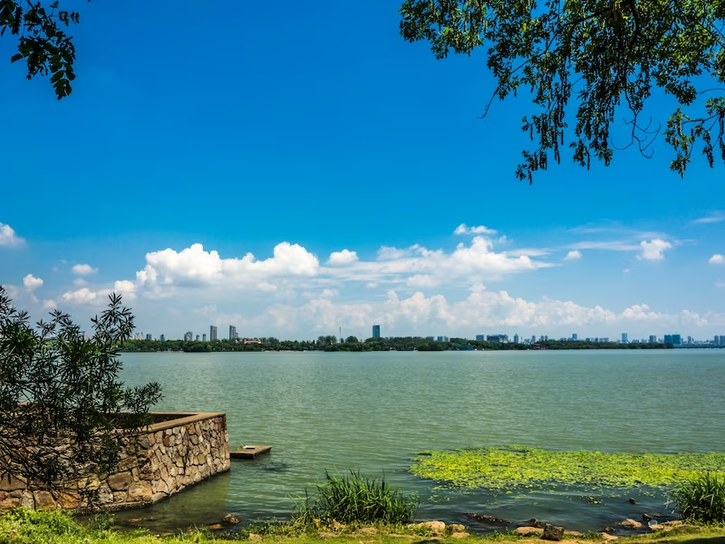
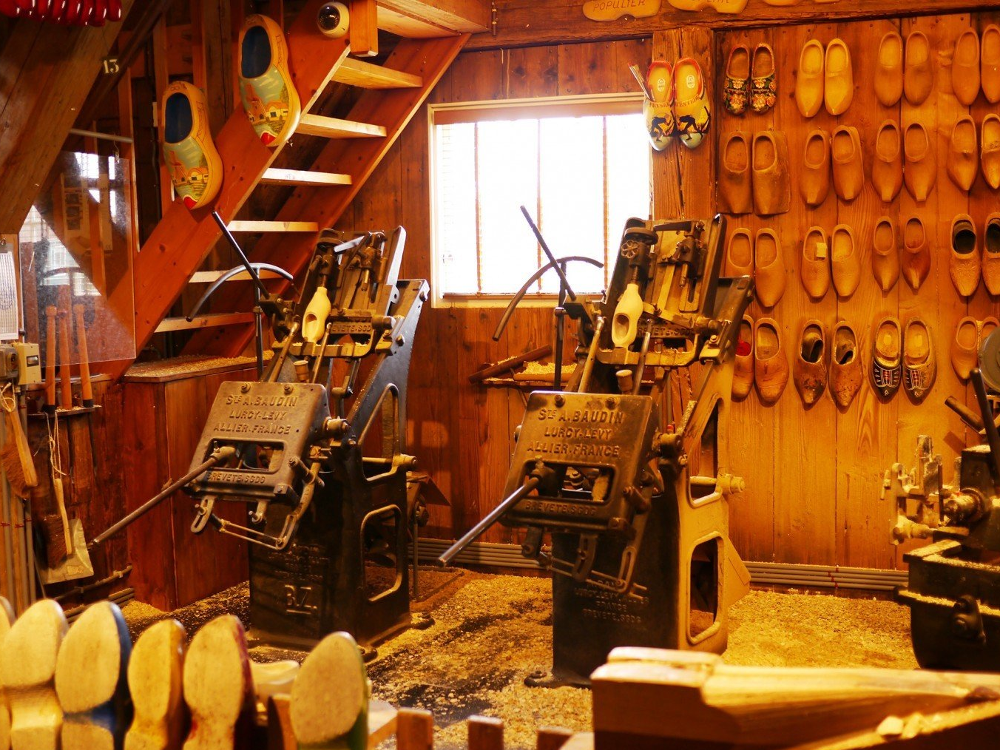
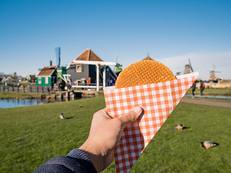

{kind=link}
{kind=link}
WHAT AND WHERE IS ZAANSE SCHANS?
Zaanse Schans is an open-air museum located near Amsterdam, Netherlands, that showcases Dutch architecture, culture, and crafts from the 18th and 19th centuries. It is known for its windmills, wooden houses, and cheese-making demonstrations.
WHY DO I WANT TO VISIT THIS PLACE?
Zaanse Schans is a unique open-air museum that offers a glimpse into Dutch history and culture. I want to visit this charming village to experience the traditional windmills, explore the traditional wooden houses, and learn about the craft and trade of the Dutch people.
OTHER THINGS TO DO AROUND THE AREA:
1. Observe the traditional Dutch windmills, which are used for grinding spices, sawing timber, and pumping water.
{kind=link}
2. Learn about the history of Dutch cheese-making at the cheese farm and museum.

3. Walk or cycle along the picturesque Zaan riverbank and take in the beautiful scenery.
{kind=link}
4.Visit the clog-making museum to see how wooden shoes are made.
{kind=link}
5. Sample Dutch delicacies such as stroopwafels, a sweet, syrup-filled waffle.
{kind=link}